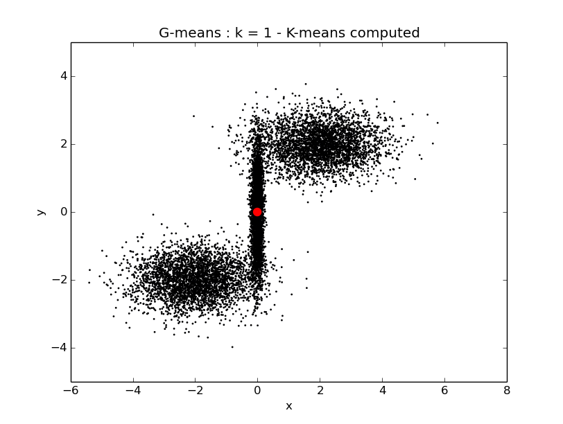

Etude théorique de g-means¶
Le principe de l’algorithme est le suivant : étant donnée une population d’individus, toujours appelés observations, on souhaite déterminer un cetain nombre d’observations moyennes qui reflètent bien l’ensemble des observations. Simplement, à la différence de kmeans, on ne connaît pas à l’avance le nombre d’observations moyennes optimal pour représenter la population : l’algorithme gmeans va le determiner automatiquement pour l’utilisateur. Concrétement, gmeans correspond à un kmeans où le k est appris lors de l’algorithme.
Le critère qui va nous permettre de determiner le k optimal est le caractère gaussien des observations. En effet, on va vouloir que tous clusters correspondent, à une certaine marge d’erreur près, à une gaussienne. Cette exigence est assez naturelle dans le cadre d’observations scientifiques : en effet, la nature suit très souvent des lois de distribution gaussienne. En revanche, ce n’est pas forcément adapté à tous les cas d’utilisation possible, et on pourrait très bien imaginer, bien que ce ne soit pas implémenté ici, un critère qui ne soit pas gaussien mais qui corresponde à une autre loi de distribution.
Principales étapes de l’algorithme :¶
Initialisation de l’algorithme : k =1 par défaut
Lancement de kmeans
- Pour chaque cluster, on cherche à savoir si le cluster ressemble à une distribution gaussienne. Pour cela :
- On cherche à déterminer la direction principale du cluster. On lance donc k-means avec k=2.
- On projette le cluster sur la droite reliant les deux centroids. On normalise la projection (centrage autours de 0 et mise à l’échelle pour une variance de 1).
- On applique la fonction A* à la projection. Si on se trouve en dessous de alpha*n, le cluster est validé gaussien. On peut donc étudier le prochain cluster. Si en revanche on se trouve au dessus de alpha*n, le cluster n’est pas validé gaussien. On incrémente donc k et on reprend à la phase 2 de l’algorithme avec k = k+1.
Lorsque tous les clusters sont validés gaussiens sur une itération, gmeans est terminé.
L’algorithme gmeans est implémenté dans la fonction compute_gmeans du fichier kmeans.py.
La fonction compute_gmeans¶
-
kmeans.compute_gmeans(population, k=1, alpha=1, display=False)[source]¶ compute the g-means algorithm on the input file (./input/input.csv).
Params k: the g-means algorithm will start with this k.
Parameters: - population (Observation[]) – the population of Observations tocompute g-means on.
- display (boolean) – if True, the first and the second coordinate of the populations are displayed step by step
Params alpha: significance level of the gaussian test
Return type: void
compute_kmeans fait appel au fichier es.py qui regroupe l’ensemble des opérations d’écriture, de lecture et d’affichages des données
Exemple de déroulement de gmeans (en deux dimensions) :¶
Considérons la population suivante :
Nous voulons séparer ces observations en trois groupe, nous choisissons donc de lancer l’algorithme gmeans.
python kmeans.py -d True
Itération 1 - k = 1¶
g-means commence avec kmeans pour k=1 :
Pour vérifier si le premier cluster est gaussien, nous lancons k-means dessus avec k=2, nous récupérons la direction du cluster et nous projettons le cluster dessus.
La projection du cluster sur sa direction n’est pas validée gaussienne, on incrémente donc k (k = 1 + 1).
cluster 0 non validé gaussien : 14.2975999403!
-------- increasing k --> 2 -----------
Itération 2 - k = 2¶
On commence avec k-means avec k = 2.
Pour vérifier si le premier cluster est gaussien, nous lancons k-means dessus avec k=2, nous récupérons la direction du cluster et nous projettons le cluster dessus.
La projection du cluster sur sa direction n’est pas validée gaussienne, on incrémente donc k (k = 2 + 1).
cluster 0 non validé gaussien : 10.741695949!
-------- increasing k --> 3 -----------
Itération 3 - k = 3¶

Pour vérifier si le premier cluster est gaussien, nous lancons k-means dessus avec k=2, nous récupérons la direction du cluster et nous projettons le cluster dessus.

Le cluster 1 est validé gaussien, nous passons donc au cluster suivant.
cluster 1 validé gaussien : 0.0797061693984!
Le cluster 2 est validé gaussien, nous passons donc au cluster suivant.
cluster 2 validé gaussien : 0.546286569869!
Le cluster 3 est également validé gaussien.
cluster 3 validé gaussien : 0.0510247798951!
Tous les clusters sont validés gaussien, l’algorithme g-means est donc terminé pour k = 3.